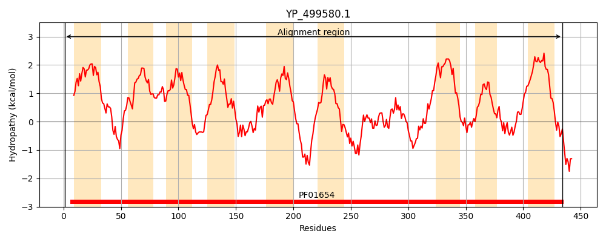
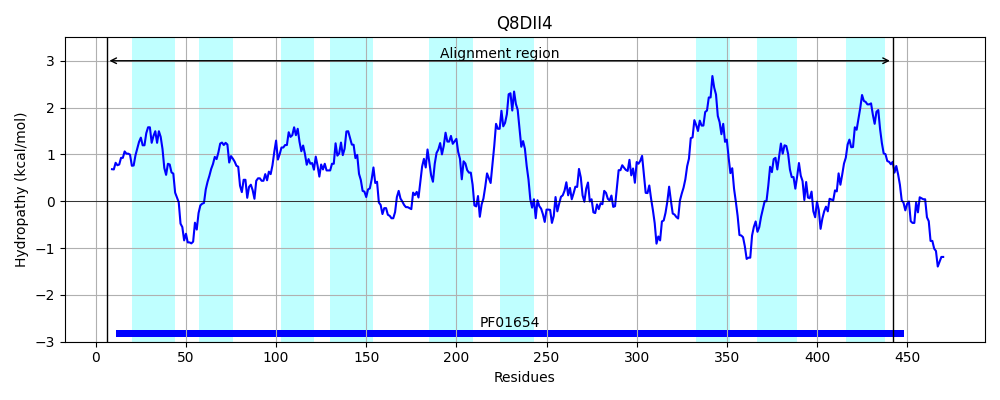
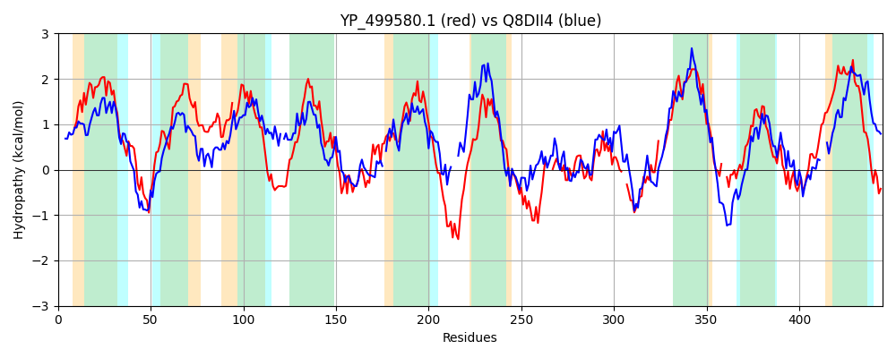

Hit Accession: Q8DII4
Hit TCID: 3.D.4.3.4
Hit Description: gnl|BL_ORD_ID|16000 gnl|TC-DB|Q8DII4|3.D.4.3.4 Cytochrome oxidase d subunit I OS=Thermosynechococcus elongatus (strain BP-1) GN=cydA PE=4 SV=1
Mach Len: 445
e:0.000000
Query TMS Count : 9
Hit TMS Count: 9
TMS-Overlap Score: 8.250000
Predicted Substrates:CHEBI:5584;hydron
BLAST Alignment:
Score: 522 , Bit scores: 205 bits, E-value: 6.1e-61, Alignment length: 445, Percentage identity: 31
Query: 1 MDTVEISRFLTAMTLAVHIIFATIGVGMPLMFAIAEFLGIRKNDLQYIAMAKRWAKAYTITVAVGVVTGTIIGLQLSLIWPTFMEMGGHVIALPL-FMETFAFFFEAIFLSIYLYTWDRFKNKWTHFLISIPVIIGGSFSAFFITSVNSFMNTPAGFELKNGKMVNVQPIEAMFNPSFIVRSF-HVITTAGMTMAFVIASIAAFKLLRNRQPKDTVYHKKALKMSMIVGFFSTLLSMLAGDLSAKFLHKFQPEKLAAYEWHFDT---SSHAKLLLFGVLDEKTQQVKGAIELPGLLSFLADNSVK--TKVQGLNDFPKSLHPPMI--VHYFFDLMVTMGILCFVISGVYVLTLMFKKLR--KFSTHKWMLYGILLTGPASMLAIEFGWFLTEMGRQPWIVRGYMRVAEAATQAGGITFVTILFGILYIILMYTCAYVLIRMFKNK 434
+DTV +SR+ A+T H+++ + GM + + E L ++ +L Y A+ W+K Y + +GV +G + Q L W F E G L F T AF EA FL I ++ W R H++ +I V G + S F+I S NS++ TP G GK +A+ NP F+V+SF H+ T FVI I+A+ LL+NR P + K+LK+ +++ L + G LSA+ ++ +QP KLAA E ++T + A + + +E + +++P LLS+L K T + GL ++ S P ++ ++Y F LMV +G+ ++ V + L + ++W+ +G + GP LA+E GW + +GRQPWIV G +R AEAA+ + +LF + ++ +YT + F ++
Sbjct: 6 LDTVVLSRWQFALTAIFHMLWPVLTTGMSIYLVVIEGLWLKTKNLTYYHHARFWSKLYILNFGIGVASGLPMAFQFGLNWAPFSESVGDFFGTLLGFEATMAFMLEASFLGIMIFGWQRVP-PVMHWISTICVAFGANLSTFWILSANSWLQTPTGGVFVEGKFRVQDYFQAIANP-FMVKSFAHMFFATLETSLFVIGGISAWYLLQNRLPN---FFTKSLKVVLVMALVIAPLQVFVGHLSAEQVYHYQPAKLAAMEALWETVPAGTPADWSVIALPNEAAETNTFEVKIPALLSYLLALRPKLDTPILGLKEWAPSDRPHLVGLIYYSFRLMVAIGLYLAALAIVTIFVWWRTGLEGDRLRNYQWLWWGWIFAGPLGYLAVEAGWIVRCVGRQPWIVYGQLRTAEAASD---LPPQVVLFSLSGLVALYTIFFFAALFFGSR 442 | Protein Hydropathy Plots: |
|---|
|  |  |
Pairwise Alignment-Hydropathy Plot:
|
|---|
|  |